Cada imagen es una página original extraída de los PDF de clase (no recreada). Los estados se asignan
solo tras revisar la página visualmente; las páginas leídas solo por OCR se indican como tales.
Módulo I · Sistemas lineales (Gauss, Gauss-Jordan)
Gauss: sustitución hacia atrás y solución única
Fuente: S6-16/09, página 29 · imagen extraída del PDF original (sin recrear)
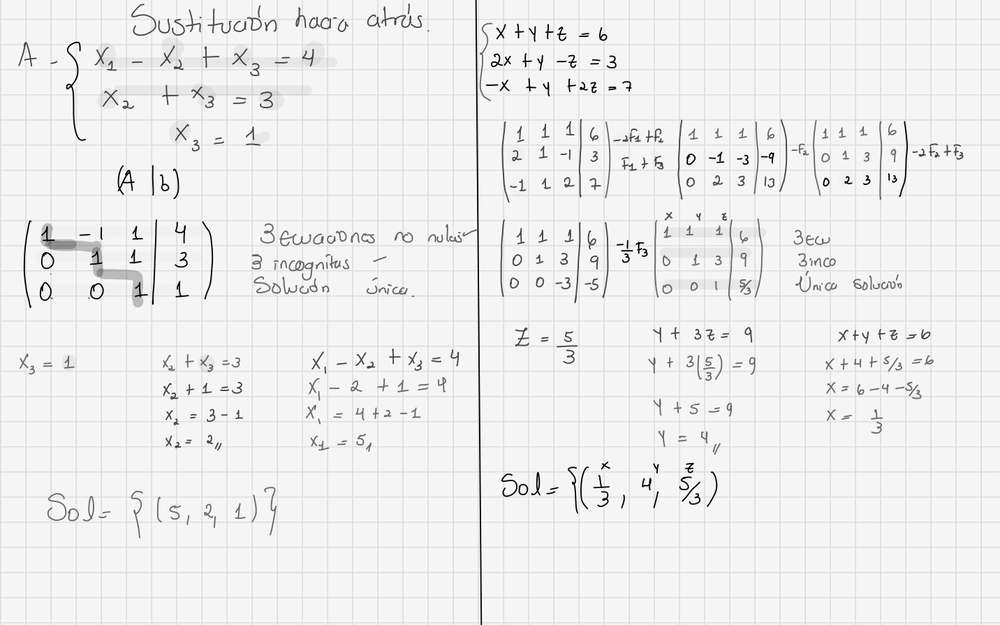
Cómo lo hace la profesora
Escalonada (1 -1 1|4; 0 1 1|3; 0 0 1|1): x3=1, x2=3-1=2, x1=4+2-1=5; Sol={(5,2,1)}
Implementación en Ax
resolver_gauss / _sustitucion_atras (directos.py)
Comparación
Coincide
Revisión: Visual
Gauss: operaciones de fila del ejemplo precargado
Fuente: S6-16/09, página 29 · imagen extraída del PDF original (sin recrear)
Cómo lo hace la profesora
-2F1+F2; F1+F3; -F2; -2F2+F3; (-1/3)F3 sobre x+y+z=6, 2x+y-z=3, -x+y+2z=7
Implementación en Ax
_escalonar registra cada Paso con la notación de clase (directos.py); precargado en interfaz/compartido/ejemplos.py
Comparación
Coincide (mismas operaciones y el mismo orden)
Revisión: Visual
Gauss: solución del ejemplo precargado
Fuente: S6-16/09, página 29 · imagen extraída del PDF original (sin recrear)
Cómo lo hace la profesora
z=5/3; y+3(5/3)=9 => y=4; x=6-4-5/3=1/3; Sol={(1/3,4,5/3)}
Implementación en Ax
Mismo resultado (guía B.1)
Comparación
Coincide
Revisión: Visual
Módulo II · Determinantes, inversa, normas y condicionamiento
Condicionamiento: 5 pasos con la norma ∞ (ejemplo B = [[1,2],[3,1]])
Fuente: S7-21/09, página 19 · imagen extraída del PDF original (sin recrear)
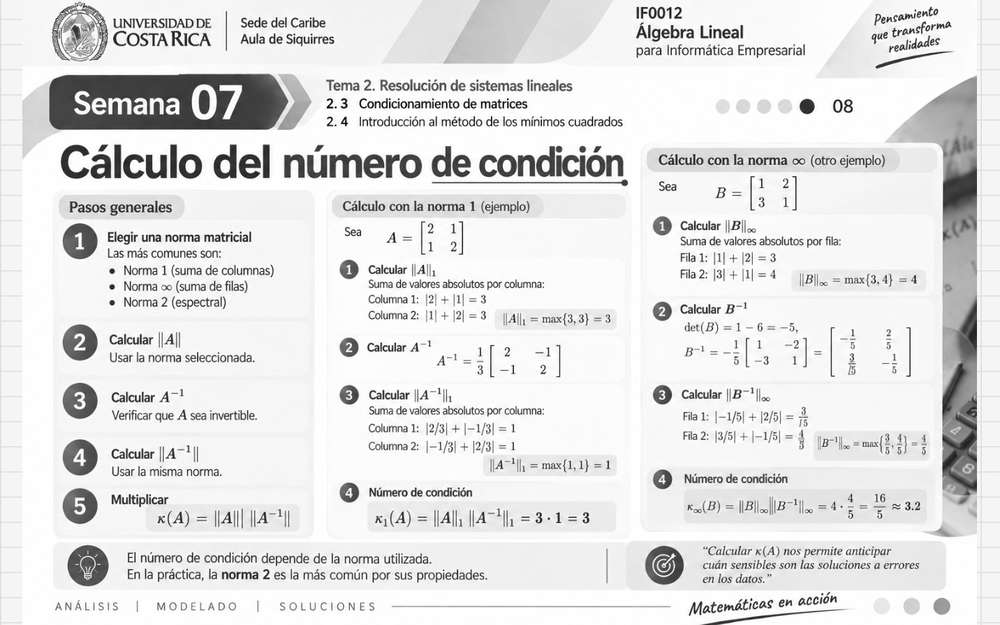
Cómo lo hace la profesora
1 norma ∞; 2 ‖B‖∞ = max{3,4} = 4; 3 B⁻¹ = [[−1/5,2/5],[3/5,−1/5]]; 4 ‖B⁻¹‖∞ = max{3/5,4/5} = 4/5; 5 κ = 4·4/5 = 16/5 ≈ 3,2
Implementación en Ax
numero_condicion_infinito (condicion.py); procedimiento_de_clase (modulo_II_condicionamiento.py)
Comparación
Coincide (mismos 5 pasos, mismas sumas por fila, mismo κ = 16/5)
Revisión: Visual y comparada con Ax
Cota de sensibilidad y clasificación por niveles
Fuente: S7-21/09, página 18 · imagen extraída del PDF original (sin recrear)
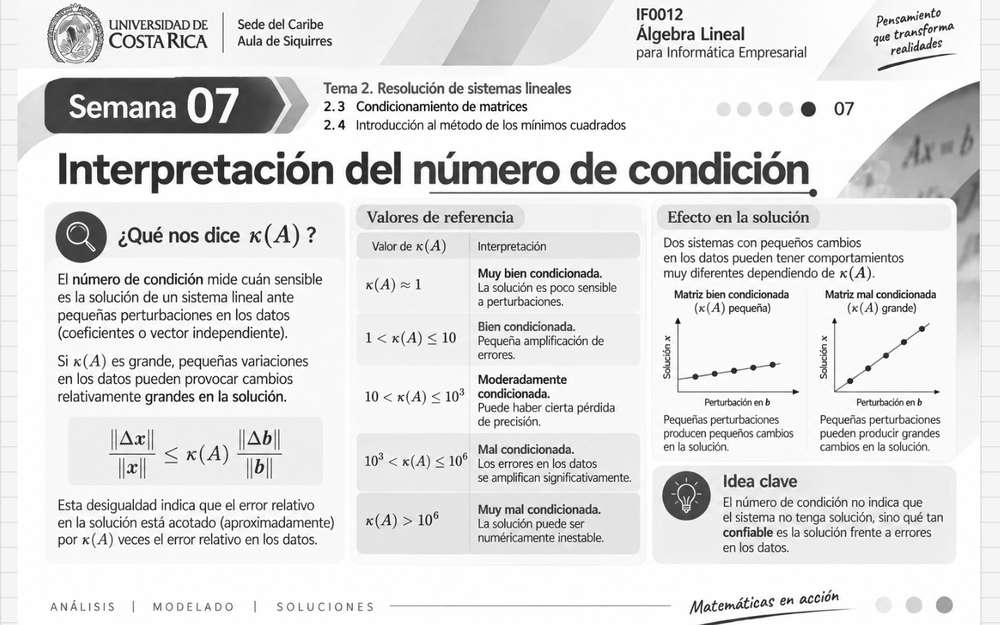
Cómo lo hace la profesora
‖Δx‖/‖x‖ ≤ κ(A)·‖Δb‖/‖b‖. La lámina clasifica en 5 niveles (1<κ≤10, 10<κ≤10³, 10³<κ≤10⁶, κ>10⁶)
Implementación en Ax
analizar_perturbacion; clasificar_kappa con los 3 niveles de OFICIAL p. 2 (10 y 100)
Comparación
Coincide en la cota. Diferencia justificada en la escala: el enunciado fija 3 niveles (OFICIAL p. 2)
Revisión: Visual (3 de 4 cuadrantes)
Propiedades del determinante (intercambio, suma de múltiplos, triangular)
Fuente: S2-19/08, página 38 · imagen extraída del PDF original (sin recrear)
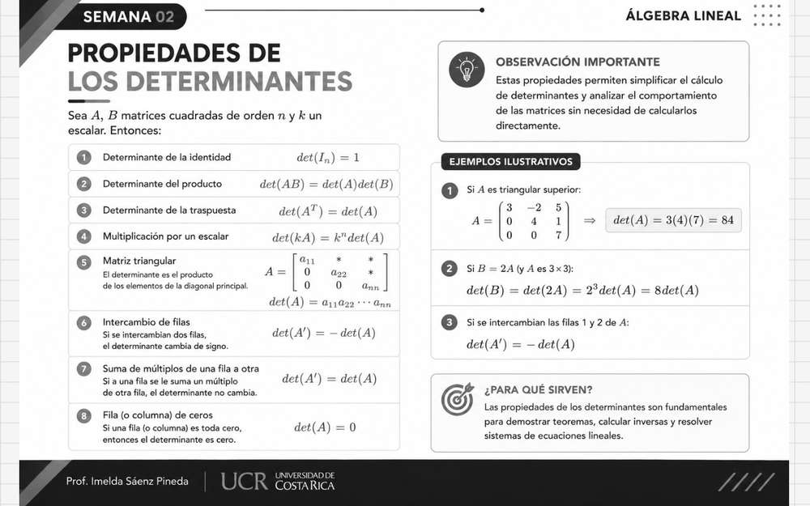
Cómo lo hace la profesora
det(A') = −det(A) al intercambiar dos filas; det(A') = det(A) al sumar a una fila un múltiplo de otra; det triangular = producto de la diagonal; fila de ceros ⇒ det = 0
Implementación en Ax
determinante (directos.py): eliminación con (−1)^intercambios × producto de pivotes. La fórmula con pivotes se deduce de estas propiedades: no aparece escrita en esta lámina
Comparación
Coincide con las propiedades. La cita de la guía (p. 38) se corrige: la fórmula con pivotes es una consecuencia, no una fórmula escrita
Revisión: Visual (3 de 4 cuadrantes)
Sumas absolutas de filas (norma ∞ destacada, S7-21/09 p. 19) y de columnas (norma 1, S7-21/09 p. 19)
Visualización complementaria (no es materia expresamente explicada en clase): captura de la aplicación real.
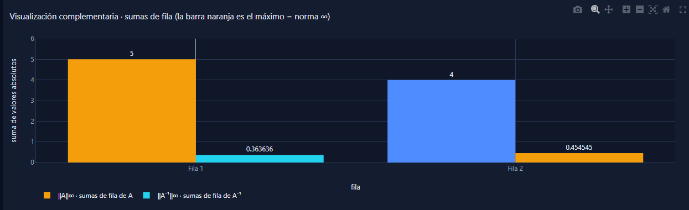
Cómo lo hace la profesora
‖A‖∞ = máx. suma de fila (S7-21/09 p. 19)
Implementación en Ax
sumas_absolutas_por_fila / sumas_absolutas_por_columna (matriz.py); normas_barras (geometria_modulo_II.py)
Comparación
Coincide con las sumas del procedimiento; la norma 1 se muestra solo como referencia (complementaria)
Revisión: Captura de la aplicación real (gráfica de filas con control gestual 2D; columnas sin control)
Perturbación frente a la cota κ∞·‖Δb‖/‖b‖
Visualización complementaria (no es materia expresamente explicada en clase): captura de la aplicación real.
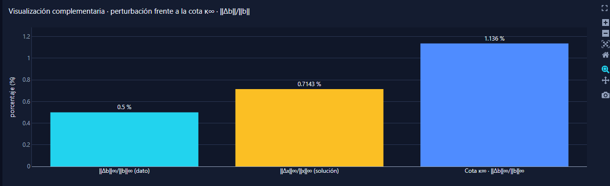
Cómo lo hace la profesora
‖Δx‖/‖x‖ ≤ κ(A)·‖Δb‖/‖b‖ (S7-21/09 p. 18)
Implementación en Ax
sensibilidad_barras (geometria_modulo_II.py) con los valores de analizar_perturbacion
Comparación
Complementaria: muestra la desigualdad del procedimiento con los valores de la perturbación introducida
Revisión: Captura de la aplicación real
Módulo III · Mínimos cuadrados, ecuaciones normales, Cramer, ajuste
Datos del ejemplo de ajuste (x+y=2; 2x+y=2,5; 3x+y=3,7; 4x+y=4,1)
Fuente: S8-30/09, página 8 · imagen extraída del PDF original (sin recrear)
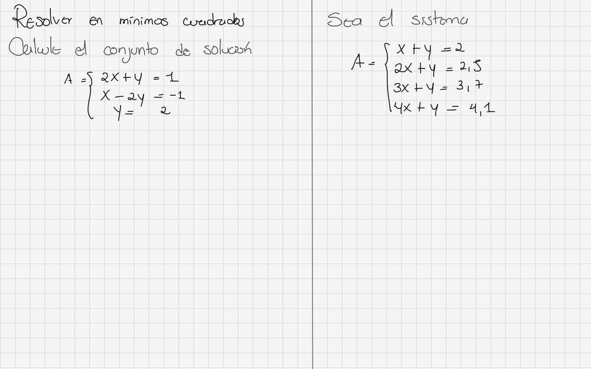
Cómo lo hace la profesora
Puntos (1; 2), (2; 2,5), (3; 3,7), (4; 4,1) con columnas [x, 1]
Implementación en Ax
ejemplos.AJUSTE (ejemplo precargado) y ajuste_lineal (minimos.py)
Comparación
Coincide con los datos del ejemplo precargado. El resultado de la lámina (página siguiente) no se ha revisado todavía
Revisión: Visual (2 de 4 cuadrantes)
Gráfica de datos, recta y residuos verticales (obligatoria, ya existente)
Visualización complementaria (no es materia expresamente explicada en clase): captura de la aplicación real.
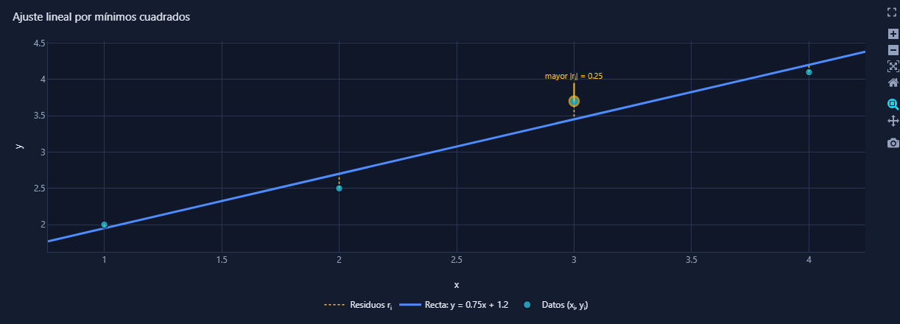
Cómo lo hace la profesora
Gráfica con los datos y la recta de mejor ajuste (OFICIAL p. 2)
Implementación en Ax
ajuste (interactivas.py): puntos, recta y segmentos de residuo rᵢ = yᵢ − ŷᵢ
Comparación
Cumple lo exigido. Verificada en la aplicación: la gráfica aparece con los datos del ejemplo
Revisión: Captura de la aplicación real
Tabla de valores observados, estimados y residuos
Visualización complementaria (no es materia expresamente explicada en clase): captura de la aplicación real.
Cómo lo hace la profesora
ŷᵢ = m·xᵢ + c; rᵢ = yᵢ − ŷᵢ; Σ rᵢ = 0 con intercepto (ecuaciones normales)
Implementación en Ax
tabla_ajuste (modulo_III_minimos.py) con los vectores del núcleo. Ejemplo: m = 3/4, c = 6/5, ŷ₁ = 39/20, Σ r = 0
Comparación
Complementaria; los números coinciden con el cálculo a mano del ejemplo
Revisión: Captura de la aplicación real
Mínimos cuadrados: sistema sobredeterminado y comprobación de b (ejemplo)
Fuente: S8-30/09, página 6 · imagen extraída del PDF original (sin recrear)
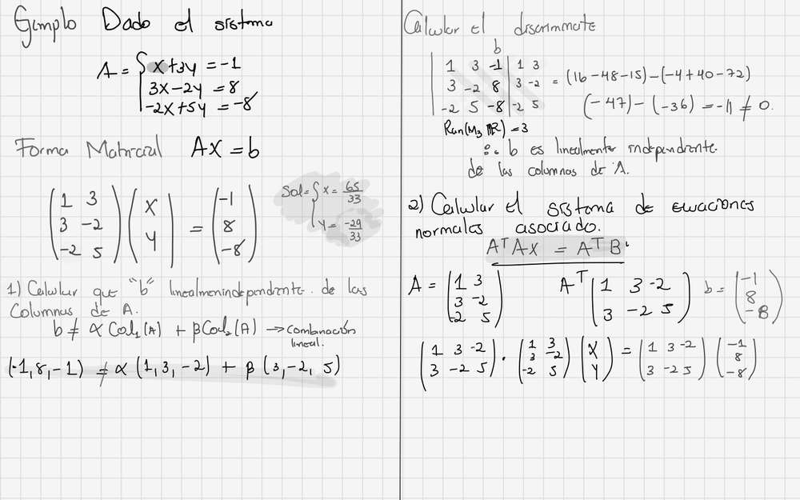
Cómo lo hace la profesora
A = [[1,3],[3,−2],[−2,5]], b = (−1, 8, −8); det[A|b] = −11 ≠ 0 ⇒ b independiente de las columnas; rango 3
Implementación en Ax
minimos_cuadrados / clasificar_forma (minimos.py)
Comparación
Coincide (sin solución exacta)
Revisión: Visual
Mínimos cuadrados: ecuaciones normales, Cramer y solución
Fuente: S8-30/09, página 7 · imagen extraída del PDF original (sin recrear)
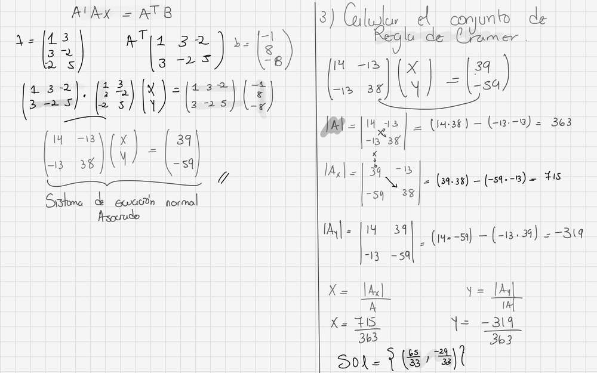
Cómo lo hace la profesora
AᵀA = [[14,−13],[−13,38]], Aᵀb = (39,−59); |AᵀA| = 363; |A_x| = 715; |A_y| = −319; x̂ = (65/33, −29/33)
Implementación en Ax
minimos_cuadrados (Gauss) y cramer (minimos.py)
Comparación
Coincide: mismos determinantes y misma solución por Gauss y Cramer
Revisión: Visual y comparada con Ax
Control gestual de la gráfica de mínimos cuadrados (MediaPipe, objetivo 2d_m3)
Visualización complementaria (no es materia expresamente explicada en clase): captura de la aplicación real.
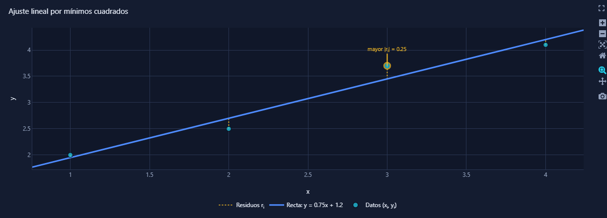
Cómo lo hace la profesora
Solo cambia los rangos de los ejes; datos, recta, estimados y residuos no cambian
Implementación en Ax
interfaz/compartido/control_gestual.py; visualizacion/interactivas.py::ajuste(rango=); gestos/vista2d.py
Comparación
Verificado en el navegador: panel, estado de cámara y gráfica con puntos, recta y residuos. Gestos: sin prueba física (pendiente del usuario)
Revisión: Captura de la aplicación real
Módulo IV · Jacobi, Gauss-Seidel, SOR, convergencia y radio espectral
Dominancia diagonal por filas
Fuente: S9-07/10, página 2 · imagen extraída del PDF original (sin recrear)
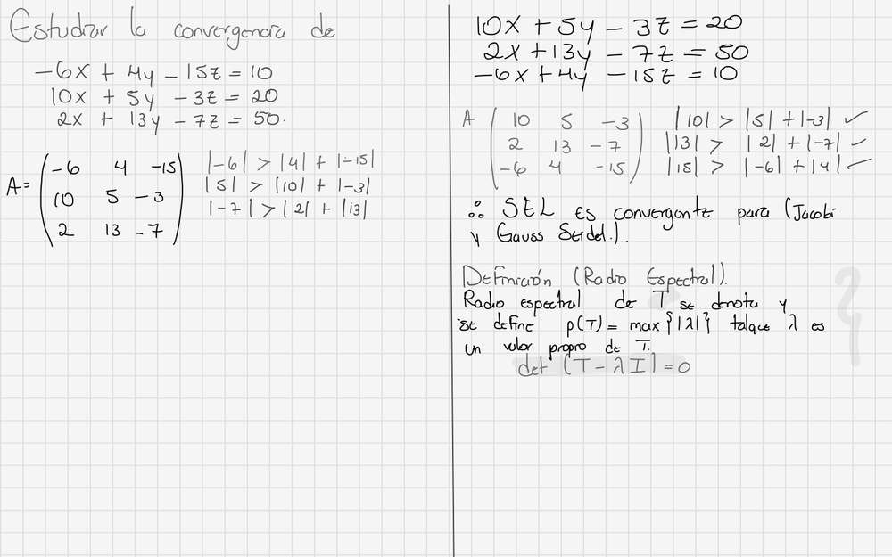
Cómo lo hace la profesora
|a_ii| > sum_{j!=i}|a_ij| (tres ecuaciones) y conclusión de convergencia
Implementación en Ax
dominancia_diagonal (convergencia.py)
Comparación
Coincide (dominancia es suficiente; la lámina la usa para concluir)
Revisión: Visual
Radio espectral: definición
Fuente: S9-07/10, página 3 · imagen extraída del PDF original (sin recrear)
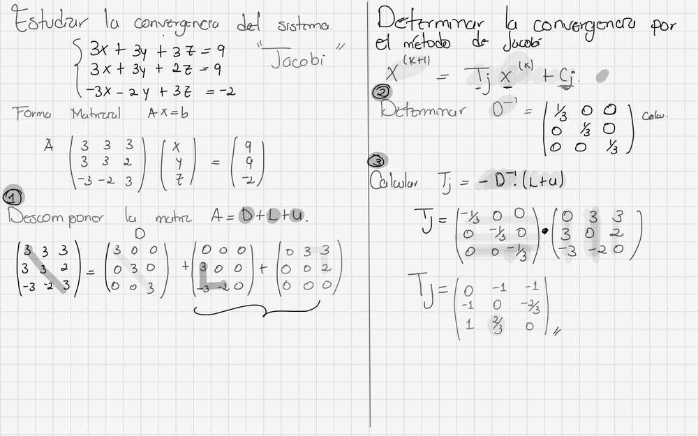
Cómo lo hace la profesora
rho(T)=max{|lambda|} con det(T-lambda I)=0
Implementación en Ax
radio_espectral / concluir (espectral.py)
Comparación
Coincide
Revisión: Visual
Descomposición A = D + L + U
Fuente: S9-07/10, página 4 · imagen extraída del PDF original (sin recrear)
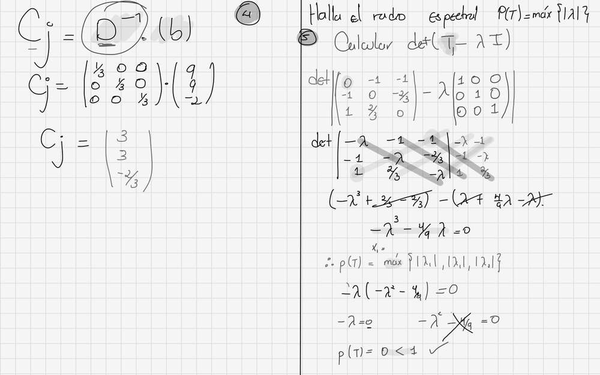
Cómo lo hace la profesora
D diagonal; L y U estrictamente triangulares
Implementación en Ax
descomponer (matriz_iteracion.py)
Comparación
Coincide
Revisión: Visual
Jacobi: T_J = -D^-1 (L+U)
Fuente: S9-07/10, página 4 · imagen extraída del PDF original (sin recrear)
Cómo lo hace la profesora
T_J = [[0,-1,-1],[-1,0,-2/3],[1,2/3,0]]
Implementación en Ax
matriz_iteracion JACOBI
Comparación
Coincide (exacto)
Revisión: Visual
Jacobi: c_J = D^-1 b y x(1) = T_J x(0) + c_J con x(0)=0
Fuente: S9-07/10, página 4 · imagen extraída del PDF original (sin recrear)
Cómo lo hace la profesora
c_J = (3,3,-2/3); x(1)=(3,3,-2/3)
Implementación en Ax
ejecutar JACOBI (ejecucion.py)
Comparación
Coincide
Revisión: Visual
Jacobi: iteración k=2
Fuente: S9-07/10, página 5 · imagen extraída del PDF original (sin recrear)
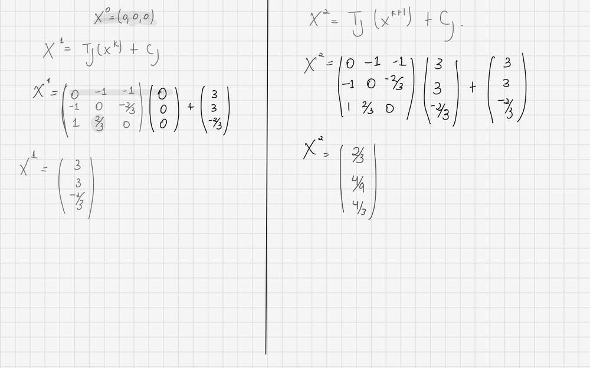
Cómo lo hace la profesora
x(2)=T_J x(1)+c_J,x(2)=(2/3, 4/9, 13/3)
Implementación en Ax
ejecutar JACOBI
Comparación
Coincide con el cálculo; la tercera componente de la lámina no se lee con certeza (ver discrepancias)
Revisión: Visual (parcial)
Radio espectral de Jacobi por det(T-lambda I) con Sarrus
Fuente: S9-07/10, página 5 · imagen extraída del PDF original (sin recrear)
Cómo lo hace la profesora
-lambda^3 - (4/9) lambda + 4/3 = 0 (la lámina omite el término 4/3)
Implementación en Ax
polinomio_caracteristico (polinomio_raices.py) → lambda^3 + (4/9)lambda - 4/3
Comparación
Coincide con Ax; la lámina S9-07/10 p.5 omite 4/3: errata
Revisión: Visual
Gauss-Seidel: T_GS = -(D+L)^-1 U
Fuente: S9-07/10, página 6 · imagen extraída del PDF original (sin recrear)
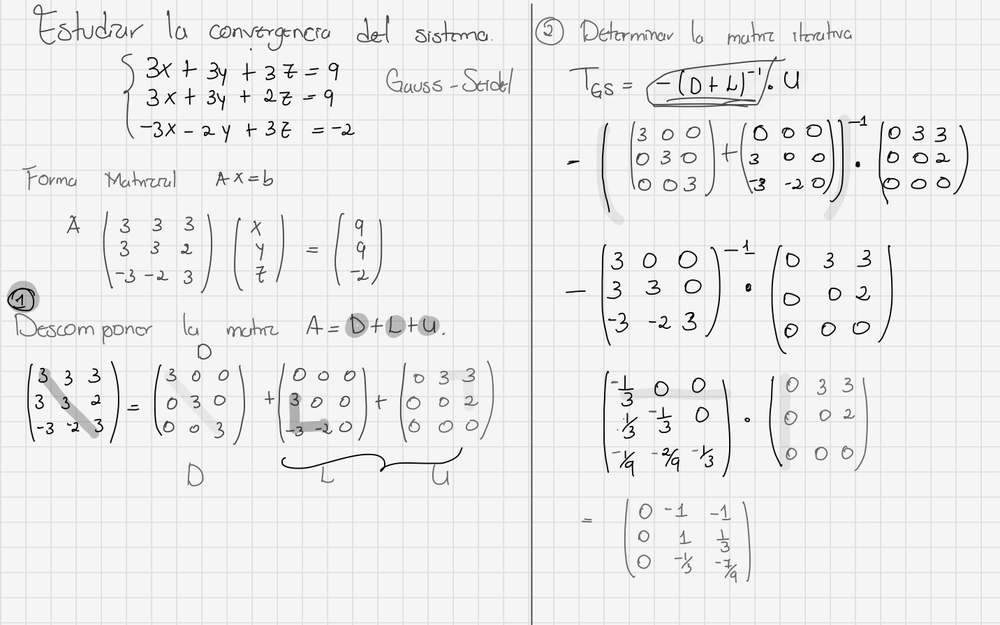
Cómo lo hace la profesora
T_GS = [[0,-1,-1],[0,1,1/3],[0,-1/3,-7/9]]
Implementación en Ax
matriz_iteracion GAUSS_SEIDEL
Comparación
Coincide (exacto)
Revisión: Visual
Gauss-Seidel: c_GS
Fuente: S9-07/10, página 7 · imagen extraída del PDF original (sin recrear)
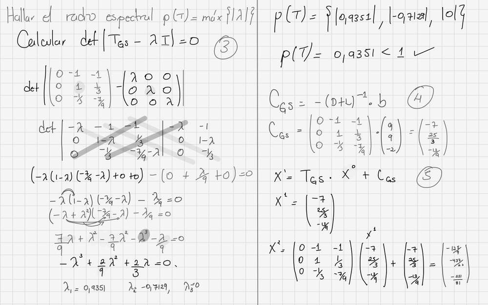
Cómo lo hace la profesora
Lámina escribe 'C_GS = -(D+L)^-1 b' pero calcula T_GS·b = (-7, 25/3, -13/9),c_GS = (D+L)^-1 b = (3, 0
Implementación en Ax
7/3)
Comparación
Error de la lámina: el valor correcto es (D+L)^-1 b y el signo positivo
Revisión: Visual
Gauss-Seidel: x(1) = T_GS x(0) + c_GS con x(0)=0
Fuente: S9-07/10, página 7 · imagen extraída del PDF original (sin recrear)
Cómo lo hace la profesora
Lámina: x(1)=(-7,25/3,-13/9) (consecuencia del error anterior)
Implementación en Ax
Ax: x(1)=(3,0,7/3); x(2)=(2/3,7/9,14/27); x(3)=(46/27,77/81,406/243)
Comparación
Error de la lámina; Ax correcto
Revisión: Visual
Radio espectral de T_GS
Fuente: S9-07/10, página 7 · imagen extraída del PDF original (sin recrear)
Cómo lo hace la profesora
lambda1=0.9351, lambda2=-0.7129, lambda3=0; rho=0.9351 < 1 => converge
Implementación en Ax
radio_espectral GAUSS_SEIDEL: rho=0.935133
Comparación
Coincide
Revisión: Visual
Criterio de parada por diferencia entre iteraciones
Fuente: S8-28/09, página 6 · imagen extraída del PDF original (sin recrear)
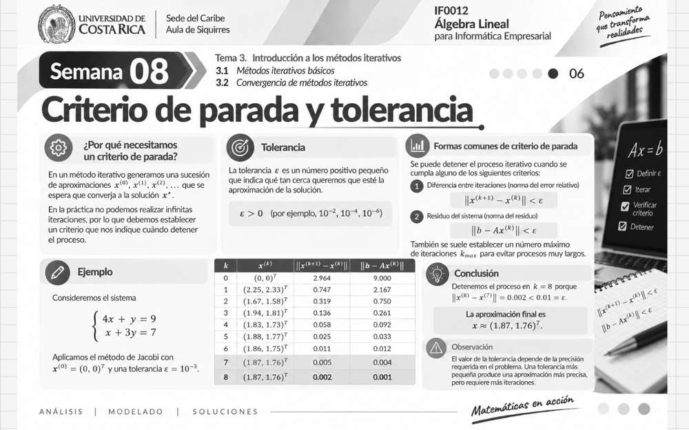
Cómo lo hace la profesora
‖x⁽ᵏ⁺¹⁾ − x⁽ᵏ⁾‖ < ε (sin división). Título: «norma del error relativo». Ejemplo: ε = 10⁻³ al inicio, conclusión con 0,01 y k = 8
Implementación en Ax
ejecucion.py: d_k = ‖x⁽ᵏ⁾ − x⁽ᵏ⁻¹⁾‖∞ < ε (absoluta)
Comparación
Coincide con la fórmula. Errata interna de la lámina (ε inconsistente, D8). La versión anterior que decía «relativa» era un error de OCR
Revisión: Visual y comparada con Ax
Discrepancias y pendientes
# Discrepancias entre los documentos de la profesora y Ax
Fecha de la revisión: 12-nov-2026. Estado: **parcial** (ver `inventario_paginas.csv`).
| # | Documento y página | Qué dice la fuente | Verificación | Clasificación | Ax | Acción |
|---|---|---|---|---|---|---|
| D1 | S9-07/10 p. 7 (Gauss-Seidel) | Escribe «C_GS = −(D+L)⁻¹·b» y calcula «T_GS·b», obteniendo x⁽¹⁾ = (−7, 25/3, −13/9) | Exacto: (D+L)⁻¹b = (3, 0, 7/3); T_GS·b = (−7, 25/3, −13/9). La iteración de Gauss-Seidel desde x⁽⁰⁾ = 0 da x⁽¹⁾ = (3, 0, 7/3) | **Error de la lámina** (signo y producto equivocado) | c_GS = (D+L)⁻¹b = (3, 0, 7/3) | Ninguna en el código. Erratas documentadas en la guía |
| D2 | S9-05/10 p. 23 y S9-07/10 p. 5 (radio espectral de Jacobi) | El polinomio de la lámina omite el término 4/3: queda −λ³ − (4/9)λ = 0 y ρ = 0 | det(T_J − λI) = −λ³ − (4/9)λ + 4/3. Raíz de módulo 1,1744 | **Error de la lámina** | Polinomio correcto (`polinomio_caracteristico`), ρ = 1,17436 | Ninguna en el código |
| D3 | S9-05/10 p. 23 | «Jacobi con M = D converge más rápido» | Con M = D, D⁻¹A tiene diagonal 1 y T_J no cambia: iteraciones idénticas | **Error de la lámina** | Iteraciones idénticas (`analizar_precondicionador`) | Documentado |
| D4 | S8-28/09 p. 6 y S8-30/09 p. 9 | La fórmula impresa es ‖x⁽ᵏ⁺¹⁾ − x⁽ᵏ⁾‖ < ε (sin división). El título dice «norma del error relativo» | Verificado en imagen. Mi lectura anterior por OCR, que daba una división, era **errónea** | **Sin discrepancia de fórmula**: Ax usa la misma fórmula absoluta (norma ∞) | Sin cambio de cálculo; la interfaz lo aclara | Corregida la nota de la interfaz y los documentos que decían lo contrario |
| D8 | S8-28/09 p. 6 (ejemplo) | Ejemplo con ε = 10⁻³ al inicio, pero la conclusión usa 0,01 y detiene en k = 8 con ‖x⁽⁸⁾ − x⁽⁷⁾‖ = 0,002 < 0,01. Con 0,01, la fila k = 7 ya tiene 0,005 < 0,01; con 10⁻³ no se cumple en k = 8 | Cálculo directo de la tabla de la lámina | **Errata interna de la lámina** (ε inconsistente) | Ax usa la ε que introduce el usuario | Documentada; no se copia la conclusión |
| D5 | S9-07/10 p. 5 | Tercera componente de x⁽²⁾ de Jacobi: lectura dudosa a 480 px (se lee «4/3» en un fragmento) | Ax da x⁽²⁾₃ = 13/3; el cálculo a mano con T_J y c_J da 13/3 | **Pendiente de verificar** con zoom mayor | 13/3 | Revisar la imagen a más resolución |
| D6 | Richardson, Faddeev-LeVerrier, Durand-Kerner | No aparecen en ninguna lámina (búsqueda OCR en 15 PDF de clase y lectura de S9-07/10) | — | **Retirados** (13-nov-2026) por fidelidad académica | Eliminados de código e interfaz | Ver docs/auditoria/matriz_fidelidad_academica.md |
| D7 | Notación de la lámina S9-07/10 p. 6 | Usa T_GS = −(D+L)⁻¹U | Coincide con la fórmula de Ax | Coincide | Igual | — |
## Pendiente de revisión visual (no hay diferencias confirmadas todavía)
Módulos I, II y III y el resto de Módulo IV (S8-28, S8-30, S9-05, S7-21, S6-14/16, S3-24/26, S2-17/19, S1-10/12, S4-02/09, S6-14, S7-21 cond., etc.). Ver `inventario_paginas.csv`.